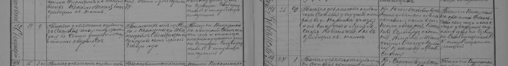
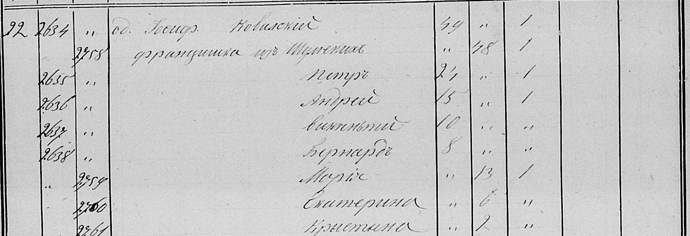
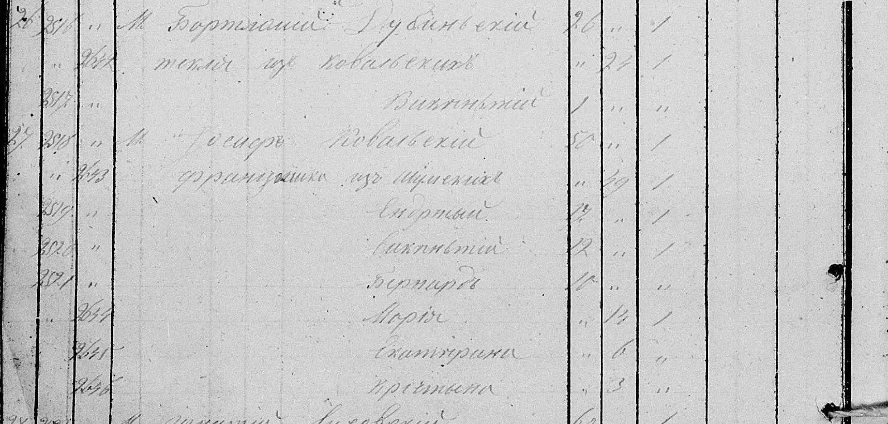
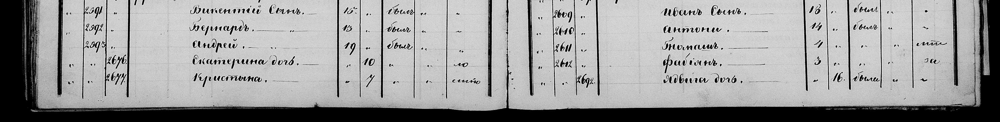
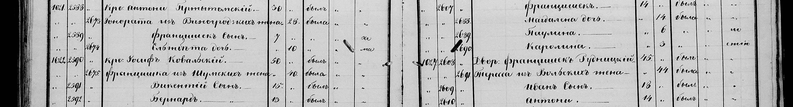
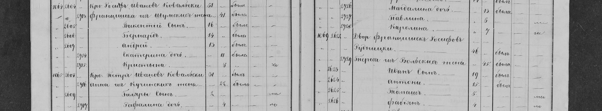
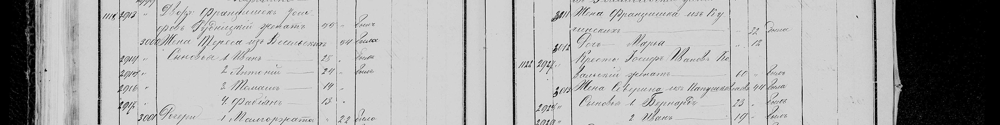
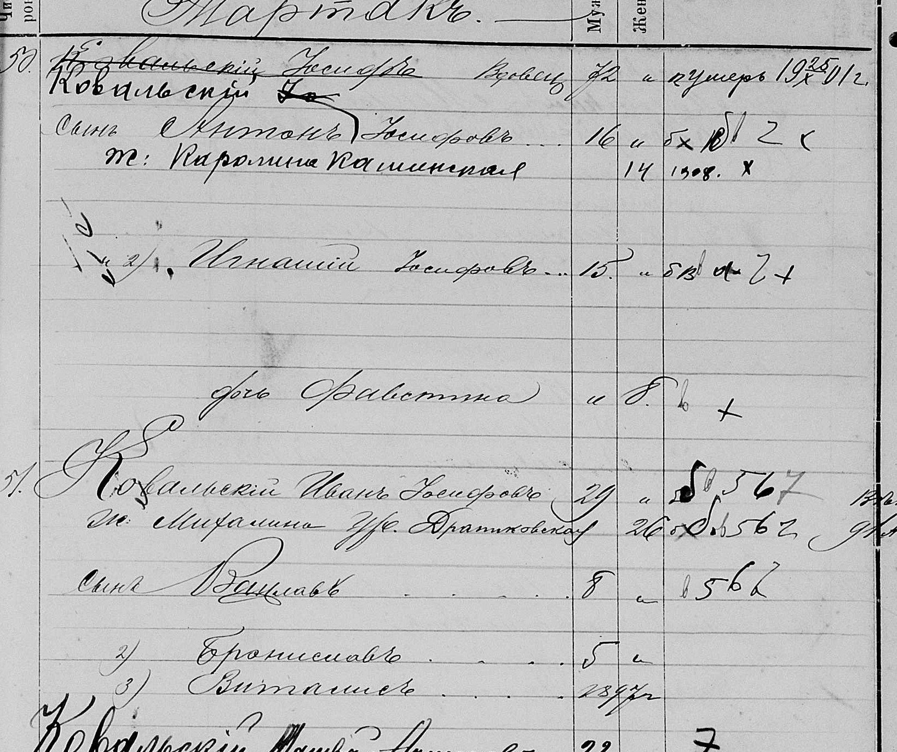

Іосиф Ковальський¶
1811–1901
Family¶
Текля Дубинська (з Ковальських)b. 1845 Марія Бродовська (з Ковальських)b. 1847 Андрій Ковальскийb. 1852 Катерина Ковальськаb. 1863 Іван Ковальськийyears unknown Ігнатій Ковальськийyears unknown Бернард Ковальськийyears unknown Вікентій Ковальськийyears unknown Маріанна Ковальськаyears unknown Секла Ковальськаyears unknown Фаустина Ковальськаyears unknown Христина Ковальськаyears unknown
Hypothetical links¶
Not verified by a source: inferred from the surname, chronology or nearby mentions.
Hypotheses¶
Іосиф, Яків і Петро Івановичі Ковальські з Тартака (сповідні розписи 1877, 1881, 1883) — брати, сини Івана (); Іосиф Іванович — той самий Іосиф Ковальський (, +1901), батько Вікентія (), Бернарда...Open — searching · H0012 Ковальські з Тартака у сповідному розписі ЦДІАК 1045-2-712 (1913–1915), скани 0020–0028, яких ще немає в каноні, — родина або родичі Ковальських Тартака (Іосиф і Андрій з нащадками); хто кому ким...Open — searching · H0016 Андрей 13 р. у дворі Іосифа Ковальського 1874 (ЦДІАК 1045-1-162, скан 0110, двір 1064) — Андрей Іосифов, чоловік Серафини з Прентів; вік ≈1861, а не ≈1852Open — searching · H0052 Текля з Ковальських, 28 р., дружина Бартломея Дубинського (двір 1029 Тартаку, розпис 1873, ЦДІАК 1045-2-276, скан 0578) — Секла Ковальська, дочка Іосифа КовальськогоOpen — searching · H0056 Іосиф Ковальський, 61 р., зі Серафиною з Палашковських, 42 р. (двір 1384 Тартаку 1886) — Іосиф, у якого перша дружина Францишка з Шумських вже не названаClosed · H0057 Петро Ковальський, 24 р., записаний у 1869 р. серед членів двору Іосифа Ковальського (двір 22, ЦДІАК 1045-2-274, скан 0383), — Петро; питання, брат чи син ІосифаClosed · H0062 Марія Ковальська, дочка Іосифа Ковальського (13 р. у 1869, 14 у 1870, двір 22 і 27 Тартака) — Марія Бродовська з Ковальських, дружина Ігнатія БродовськогоClosed · H0063 Іосиф Ковальський, вдівець 72 р. (двір 50 Тартака, книга 1900–1908), із синами Антоном 16 і Ігнатієм 15 та дочкою Фавстиною 8 — Іосиф; у двір 51 його син Іван 29 з Михаліною — ІванClosed · H0067
Life¶
-
est. 1811
Birth1 · hypothesis
вирахувано з віку «90 лѣтъ» у запису про смерть

-
1869
Residence · Тартак2 · hypothesis
Тартак, сповідальний розпис Новоград-Волинського костелу 1869 (ЦДІАК 1045-2-274), скан 0383, двір 22 (№2634): «Іосифъ Ковальскій» 49, жена Францишка изъ Шумскихъ 48; сини Петръ 24, Андрей 15, Викентій 10, Бернардъ 8; дочки Марія 13, Екатерина 6, Кристына 2

-
1870
Residence · Тартак3 · hypothesis
Слобода Тартак, сповідальний розпис Новоград-Волинського костелу 1870 (ЦДІАК 1045-2-275), скан 0469, двір 27 (№2518): «Іосифъ Ковальскій» 50, жена Францишка изъ Шумскихъ 49; сини Андрей 17, Викентій 12, Бернардъ 10; дочки Марія 14, Екатерина 6, Кристына 3

-
1873
Residence · Тартак4 · hypothesis
Тартак, сповідальний розпис Новоград-Волинського костелу 1873, двір 1022 (№2590): «Кре: Іосифъ Ковальскій» 50, жена Францишка изъ Шумскихъ 40; сини Викентій 15, Бернардъ 13, Андрей 19; дочки Екатерина 10, Кристына 7


-
1874
Residence · Тартак5 · hypothesis
Тартак, сповідальний розпис Новоград-Волинського костелу, двір 1064 (№2604): «Кре: Іосифъ Ивановъ Ковальскій» 51, жена Францишка изъ Шумскихъ 41; сини Викентій 16, Бернардъ 14, Андрей 13; дочки Екатерина 11, Кристына 8

-
1883
Residence · Тартак6
д. Тартак, двір 1122; селянин, 60 років; по батькові «Иванов»; дружина Северина з Папуш… 44

- 1886 Residence · Тартак7 Тартак Слобода, сповідальний розпис Новоград-Волинського костелу 1886 (ЦДІАК 1045-2-704), скан 0200, двір 1384 (№3488): «Ковальскій Іосифъ Кр. ж.» 61, жена Серафина Палашковска 42; діти двору не звірені
-
between 1900 – 1908
Residence · Тартак8
Тартак, сповідальний розпис Новоград-Волинського костелу, книга 1900–1908 (ЦДІАК 1045-2-924; вік у книзі — на початок 1900 р., пізніші дописи до 1911), скан 0474, двір 50: «Ковальскій Іосифъ» вдовецъ 72 (на полі помітка «умер»); сини Антонъ Іосифовъ 16 (дружина Каролина Каминская 14, 1908), Игнатій Іосифовъ 15; дочка Фавстина 8

- 1901 Residence · Тартак1 д. Тартак; селянин Рогачівської волості
- 25 October 1901 Death · Тартак1 помер від старості, 90 років; пріобщений св. Таїн
- 27 October 1901 Burial1 Черницько-Слободецький римо-католицький цвинтар; хоронив вікарій Кс. Антоній Скальський


Names in the sources¶
- Іосиф Ковальський uk
- Іосифъ Ковальскій ru
Documents¶
Media¶
- ЦДІАК 1045-2-276, скан 0577, двір 1022 (Тартак) — Іосиф Ковальський 50, Францишка з Шумських 40, Викентій, Бернард, 1873 — документ у сторі доказів
839313ae82d1… - ЦДІАК 1045-2-276, скан 0577, двір 1022 — діти Андрей 19, Екатерина 10, Кристына 7, 1873 — документ у сторі доказів
942ab22412bc… - ЦДІАК 1045-1-162, скан 0110, двори 1064–1065 (Тартак) — Іосиф і Петро Іванови Ковальські з родинами — документ у сторі доказів
a65cfcfed666… - ДАЖО 178-3-200, скани 0496–0497, №198 — смерть Іосифа Ковальського, 1901 — документ у сторі доказів
36d849ef3dd2… - ЦДІАК 1045-2-701, скан 0510, двір 1122 — Іосиф Іванов Ковальський із сім'єю, 1883 — документ у сторі доказів
3b73db4f64fd…
Notes¶
Названі синами в записі про смерть 1901: Андрій Андрій Ковальский (син Іосифа підтверджено розписом 1883: «Андрей Іосифов», двір 1122; дослідник 2026-11-06), Вікентій Вікентій Ковальський, Бернард з Антонією Бернард Ковальський, Ігнатій Ігнатій Ковальський, Іван Іван Ковальський; «Петро» Петро Ковальський у розписах — брат Іосифа (по батькові Іванов), у записі 1901 названий сином без з'ясованого збігу. Названі доньками: Секла Секла Ковальська, Маріанна Маріанна Ковальська, Христина Христина Ковальська, Фаустина Фаустина Ковальська. Дружина не названа в записі 1901 (1877 — Францишка з Шчеваров?, 1883 — Северина з Папуш…). Запис про смерть — F0065. Батько Іван (Іван Ковальський, гіпотетично): по батькові «Иванов» у розписах 1877 і 1883; вік у 1883 — 60 років, у 1901 — «90 лѣтъ».
-
Метричні книги Новоград-Волинського римо-католицького костелу Волинської губернії, 1900–1903 (народження; містить і шлюби й смерті) ↩↩↩↩
-
Сповідний розпис римо-католиків Новоград-Волинського костелу, 1869 ↩
-
Сповідний розпис римо-католиків Новоград-Волинського костелу, 1870 ↩
-
Сповідний розпис римо-католиків Новоград-Волинського костелу, 1873 ↩
-
Сповідальний розпис парафіян Новоград-Волинського римо-католицького костелу 1874 р. ↩
-
Сповідний розпис римо-католиків Новоград-Волинського костелу, 1883 (в описі — «Метрична книга Новоград-Волинського костелу») ↩
-
Сповідний розпис римо-католиків Новоград-Волинського повіту (Новоград-Волинський костел), 1886 ↩
-
Исповедная роспись римо-католиков Новоград-Волынского деканата, 1900–1908 ↩